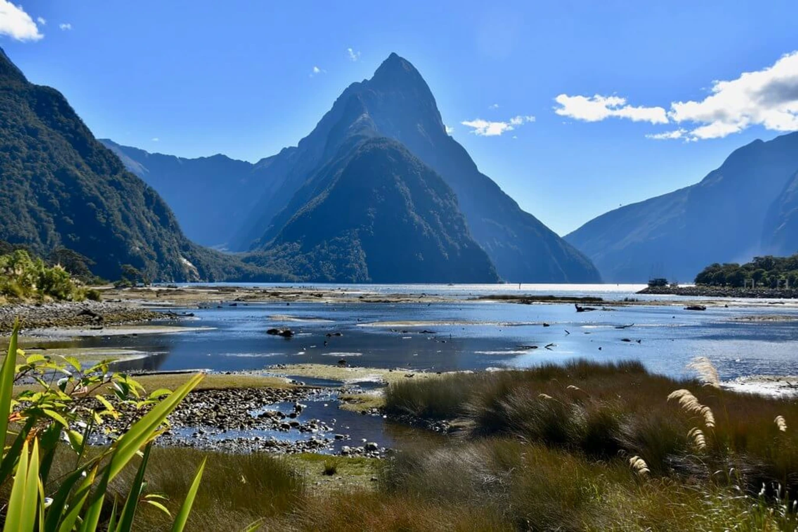

I spent a few months in Australia when I was 22. I did a 6-week van trip on the east coast with a friend of mine. I had the most amazing experience there. Camping, using public gas barbecues, having conversations with the locals, and above all, admiring nature. My best souvenir was a day trip on the Whitsunday islands and especially the Whitehaven beach. This is probably one of the most beautiful places I have ever seen.

New Zealand is much colder than Australia, but it is so beautiful, especially the South Island, which is a must-go for a Lord of the Rings fan! I will always remember my bus ride between Queenstown and Milford Sound. As soon as we entered the Fiordland National Park, I loved the feeling of being surrounded by raw nature. Green mountains, stunning native birds, forests, and deep-water sounds heading towards the sea. For the boldest, you can experience a 4-day track to reach Milford Sound on foot.
